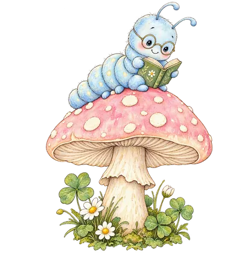

This fortnight at a glance
Counted from the AI at Work Roadmap items published 12 to 25 October 2026.
This fortnight's headline five
Coming up
| ID | Feature | What it does | Family | Target |
|---|
"I'm late, I'm late!" Dates that matter
Pick a date on the watch chain to open it: what is happening, what it means for your agency, who should look at it, and where it comes from. Days are counted from this issue's publish date, 27 October 2026.
What's new this fortnight
Choose Tiles to flip through the highlights, or List to scroll everything in one place, including all 15 roadmap items. Every item opens a drawer with the detail and the source.
The headline five
The roadmap items most likely to matter to Queensland public sector agencies this fortnight
When will it land?
Where is the change?
What does it touch?
HowClick a bar to list its updates, or Page to open that area’s dedicated page: its headline five, and Act, Plan or Review on every item.
What governments in Australia and the UK are doing
"Everybody has won, and all must have prizes." What each jurisdiction is learning, and what it means for Queensland agencies.
The race so far
The "what it means for Queensland" lines are our analysis, not statements from the source. The Commonwealth OAIC obligations apply to Commonwealth APP entities; Queensland agencies sit under Queensland privacy law. Items marked "still current" were published before this fortnight but describe arrangements in force now.
The Frontier journey
Six stages from first chat to governed agents at scale. The caterpillar moves to each stage as you explore. Click a stage, or press play.Tap a stage to open it, and tap it again to fold it away.
How the Microsoft stack works together
Every guest at the table is a Microsoft product, and everything is poured from one teapot in the middle: Microsoft IQ. Hover over or tap a seat, or call "Clean cups, move down!" for a guided tour around the table.
Where does my data actually go?
AI can feel mysterious. It doesn't need to. Choose something you might ask Copilot to do and follow the request down the rabbit hole, from the moment you ask to the moment the answer comes back.
How it works: the new way AI is paid for
Follow a request through Alice's adventure, page by page: down the rabbit hole, the golden key, the Drink Me bottle, the Queen's guards, the Queen counting her roses, and her ledger. Press play, or click any step: the storybook, the diagram and the words move together.
Learning for every stage, with a lesson every fortnight
“That’s the reason they’re called lessons,” the Gryphon remarked: “because they lessen from day to day.”
Short lessons of about ten minutes from public sources, a new one with every issue, plus learning plans and resources for the people rolling AI out.
Royal decrees for IT, Finance, Legal and Security
Governance, cost and risk actions from this fortnight. Press a card to read the whole decree, and tick them off as you go.
On the horizon
Announced or on the roadmap but not here yet. Each card says what it could mean for Queensland agencies and why it matters. Dates are targets, not commitments.
The Queen of Hearts requests the pleasure of your company
Royal invitations to Microsoft events across Australia, New Zealand and online, and the Caterpillar's curious questions to take into your next leadership meeting. Break a seal on the Queen's five, or open any invitation in the Royal Post Office.
Royal invitations
Our own session with Charlie and Bill, the next Copilot Club, the next two Microsoft AI Grand Rounds for healthcare and Cowork MythBusters. Every other invitation is in the Royal Post Office below. Tap an invitation to open it.

Three curious questions
- Does every Copilot pilot and agent we run have a FAIRA or FAIRA LITE? Version 2 of Queensland's AI governance policy took effect in August 2026.
- Who decides which teams can spend AI credits, and on which models? Cowork, Code, Autopilot and frontier models now run on usage-based billing.
- When our agents get their own identities, who owns them and how do we switch them off? Persistent agent identity is on the roadmap for November 2026, and UK NCSC advice calls for a tested way to stop agents.
Want to walk through any of this? Book 30 minutes with me, or reply to the email this came with.
Charlie Marie Shanks, AI Workforce Solutions Specialist, Microsoft
“Begin at the beginning,” the King said gravely, “and go on till you come to the end: then stop.”
Takes you back to At a glance and resets every picture, tour and story, ready to explore again.